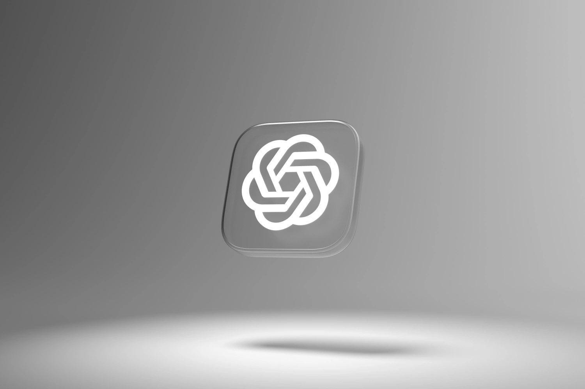

Recent Work

Color as a Risk Indicator: Visualizing AI Hallucinations in Health
UX ResearchA user study on how color in ChatGPT's interface can help people critically evaluate AI answers when self-diagnosing and avoid over-trusting confident but wrong information.
View project